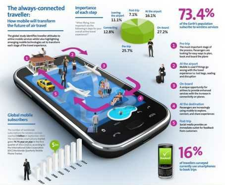

| Introduction |
| Introduction | Uses | Mobile Technology and society | Impact |
 Mobility Tasks, issues and problems can now be checked and fixed online even while a person is on the road, as computer and mobile phone technologies offer remote access capabilities, thus the things going on even at a main computer can be opened as long as there is wireless signal on the place where the person is currently located. Checking orders, stocks and prices can also be conducted, as well as making online payments are already possible. Wireless Wi-Fi systems, as they are called, are places with wireless local area network technology, and they are now available in various places, such as coffee shops, parks and other establishments.
By means of a laptop or PDA console, a person can conduct business and connect to the Internet
even while outside, as long as the Wi-Fi signal is present. Significance Mobile technology has
indeed transformed the way business is conducted. Unlike before when people would have to go to
banks, or do business at particular offices, these days they can do the same tasks online or through
phone. The costs of traveling are reduced and time is used on other transactions, thus allowing businesses
to prosper faster and consumers acquire their purchases more efficiently. In addition, the
market audience is no longer confined in a particular geographic area, and businesses can go global
without spending too much for investment.